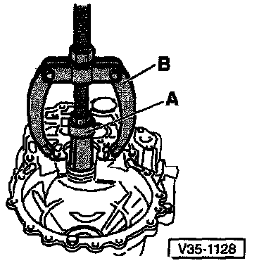
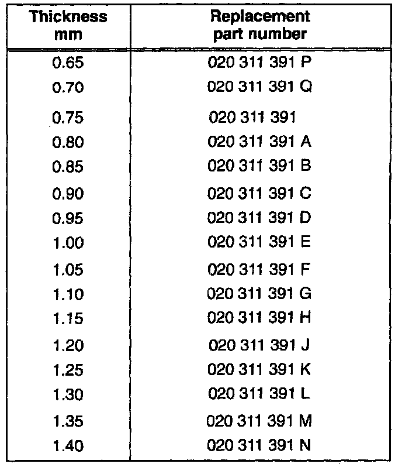

Output Shaft: Adjustments
Determining Thickness Of Output Shaft ShimNOTE: It is also necessary to readjust the input shaft when any of the following is replaced:
- Final drive
- Clutch housing
- Tapered roller bearing

- Press outer race for small tapered roller bearing along with 0.65 mm adjustment shim fully into clutch housing
- Install output shaft and tighten bearing support
- Tighten bearing mount nuts
- Tightening torque: 25 Nm (18 ft lb) plus additional 90° (1/4-turn)

- Install dial indicator (3 mm measuring range)
- Adjust dial indicator to zero with 1 mm preload
- Move output shaft up and down
- Read and record play measured by dial indicator
^ Example: 0.30 mm
CAUTION: Do not rotate the output shaft while measuring play as this will cause the bearings to settle, resulting in an inaccurate measurement.
Calculating adjustment shim thickness
The correct shim thickness is selected by adding together:
^ specified bearing preload (a constant, 0.20 mm)
^ the measured play (example: 0.30 mm)
^ test shim thickness (0.65 mm)
Example:
^ Inserted test shim thickness--0.65 mm
^ Add reading from the dial indicator--0.30 mm
^ Add preload (constant)--0.20 mm
^ Shim thickness required = 1.15 mm

- Remove output shaft and pull out small tapered roller bearing outer race
^ A = Internal extractor: 37-46 mm e.g. US 1099 or Kukko 21/6
^ B = Counter support e.g. US1032 or Kukko 22/2
Available Adjustment Shim Sizes:

- Press in outer race for small input shaft tapered roller bearing along with correct adjustment shim
^ Example (calculated above): 1.15 mm
- Install output shaft
- Tighten bearing support mounting nuts in clutch housing
^ Tightening torque: 25 Nm (18 ft lb) plus additional 90° (1/4-turn)

Checking Friction Moment (Turning Torque)
- Use commercial torque gauge (A), 0-600 Ncm range (0-54 in lb)
- Lubricate bearings with transmission oil before checking friction moment (turning torque)
Specifications:
^ New bearings: 130-180 Ncm (12-16 in lb)
^ Used bearings: At least 30 Ncm (2.7 in lb)